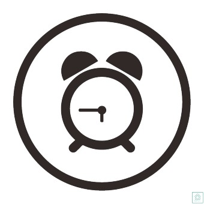

<!--2일차 타이머 만들기-->

<!DOCTYPE html>
<html>
<div class="w3-panel" style="border: 1px solid #ccc; padding: 10px; display: inline-block;">
<body style="text-align: center;">


<h2 >카운트 다운 타이머 만들기</h2>
</img>
<h1 id="clock" onclick = 'inputtime()'>00:00:00</h1>

<br>
<button type="button" onclick="start()"style="margin-right: 10px;">START</button>
<button type="button" onclick="stop()"style="margin-right: 10px;">STOP</button>
<button type="button" onclick="reset()">RESET</button>

</div>


<!-- 타이머 기능 말그대로 스타트->시작 , 스탑->멈춤 이런식....-->
<script>
  let timer;
  let seconds = 0;

  function start() {
    timer = setInterval(update, 1000);
  }

  function stop() {
    clearInterval(timer);
  }

  function reset() {
    clearInterval(timer);
    seconds = 0;
    update();
  }

//시:분:초가 업로드 되는 부분
  function update() {
    const hours = String(Math.floor(seconds / 3600)).padStart(2, "0");
    const minutes = String(Math.floor((seconds % 3600) / 60)).padStart(2, "0");
    const remainingSeconds = String(seconds % 60).padStart(2, "0");
    
    document.getElementById('clock').innerText = `${hours}:${minutes}:${remainingSeconds}`;
    seconds++;
  }

  // h1에 시:분:초를 입력할 수 있도록 하는 부분
  function inputtime() {
    document.getElementById('clock').contentEditable = true;
    document.getElementById('clock').focus();
  }

  document.getElementById('clock').addEventListener('blur', function() {
    totalSeconds = getTotalSecondsFromClock();
    update();
    document.getElementById('clock').contentEditable = false;
  });

</script>

</body>

</html>